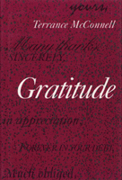

<body bgcolor="#FFFFFF" text="#000000" link="#0000FF" vlink="#CC0000" alink="#CC0000"><center><hr width="350" size="1" align="center" noshade>The first modern philosophical exploration of gratitude<hr width="350" size="1" align="center" noshade><p><a href="https://cdcshoppingcart.uchicago.edu/Cart/ChicagoBook.aspx?ISBN=9781566390385&&PRESS=temple" target="_top">Buy this book!</a> | <a href="https://cdcshoppingcart.uchicago.edu/Cart/Cart.aspx?PRESS=temple" target="_top">View Cart</a> | <a href="https://cdcshoppingcart.uchicago.edu/Cart/Cart.aspx?PRESS=temple" target="_top">Check Out</a></p><p></p></center><!--none//--><h1>Gratitude</h1>
<h3>Terrance McConnell</h3>
<P>cloth 1-56639-038-9 $68.50, Apr 93, <FONT COLOR=#990033>Out of Stock Unavailable</FONT>
<BR> 288 pp
5.5x8.25
</P><BLOCKQUOTE><I>"This is a solid piece of work. The author has done the profession of philosophy the service of putting into more helpful order than anyone else has done (to my knowledge) the variety of issues and often confusing views and positions that are to be found in the literature on the topic of gratitude."</I>
<br>&#151<b>Claudia Card</b>, University of Wisconsin<I></I></BLOCKQUOTE>
<p>In this century, the topic of gratitude has received little more than passing attention, yet, in earlier periods of Anglo-American moral philosophy, ingratitude was treated as a serious vice. Terrance McConnell provides the first contemporary philosophical exploration of the phenomenon of gratitude. Arguing that it is both an obligation and a moral sentiment, he discusses ways in which gratitude seems to conflict with other important theses in ethical theory. He offers examples from several contexts, including political and filial obligations and relations between friends and casual acquaintances.
<p>McConnell describes conditions that generate debts of gratitude, the requirements of such debts, and the relationship between moral requirements and emotions. He discusses the question of whether gratitude toward someone interferes with the impartiality that is morally required in other situations. He also shows how various moral traditions&#151utilitarianism, Kantianism, and the ethics of virtue&#151can account for some aspects of the morality of gratitude, but not all.
<BR>&nbsp;<h2>Contents</h2><P>
<p>Preface
<br>Introduction
<p>1. When Gratitude Is Owed
<br><I>Simmons's Conditions &#149
The Efforts of the Benefactor &#149
The Motives of the Benefactor &#149
The Intentions of the Benefactor &#149
The Desires of the Beneficiary &#149
The Receipt of Benefits &#149
Conclusion</I>
<p>2. What Gratitude Requires
<br><I>Doubts About Gratitude &#149
Gratitude and Equal Benefits &#149
Inappropriate Responses &#149
Gratitude, Feelings, and Reasons for Action &#149
A Proposal &#149
When Has a Debt of Gratitude Been Discharged? &#149
Imperfect Duties &#149
Responses to Difficulties</I>
<p>3. Gratitude, Feelings, and Emotions
<br><I>The Problem and the Positions &#149
The "Indirect Control" View &#149
Adams's View &#149
A Third View &#149
Advantages of the Third View &#149
Conclusion</I>
<p>4. Gratitude and Impartiality
<br><I>Two Cases &#149
Impartialism: An Initial Defense &#149
Problems for Personalists &#149
Further Suspicions About Impartialism &#149
Partiality and the Role-Related Obligations &#149
Conclusion</I>
<p>5. Gratitude and Moral Theories
<br><I>Sidgwick's Utilitarianism &#149
Kant on Gratitude &#149
The Ethics of Virtue &#149
Conclusion</I>
<p>6. Gratitude and Political Obligations
<br><I>What Is to Be Shown &#149
The Gratitude Account of Political Obligations &#149
An Implication of the Argument &#149
Objections &#149
Does Gratitude Require Obedience to the Law</I>
<p>7. Gratitude and Filial Obligations
<br><I>The Task &#149
The Gift of Life? &#149
English's Friendship Account &#149
Criticisms of the Friendship Account &#149
The Gratitude Account &#149
Complications &#149
Pathological Demands &#149
Conclusion</I>
<p>Notes
<br>Bibliography
<br>Index
</P><BR>&nbsp;<H2>About the Author(s)</H2>
<P><b>Terrance McConnell</b> is Professor of Philosophy at the University of North Carolina at Greensboro.</P>
<BR><H2>Subject Categories</H2>
<p><A HREF="/tempress/philosophy.html" TARGET="_top">Philosophy and Ethics</a>
</p>
<p align="center"><a href="https://cdcshoppingcart.uchicago.edu/Cart/ChicagoBook.aspx?ISBN=9781566390385&&PRESS=temple" target="_top">Buy this book!</a> | <a href="https://cdcshoppingcart.uchicago.edu/Cart/Cart.aspx?PRESS=temple" target="_top">View Cart</a> | <a href="https://cdcshoppingcart.uchicago.edu/Cart/Cart.aspx?PRESS=temple" target="_top">Check Out</a></p><p><font face="Arial" size="1"><a href="copyright.html" onMouseOver="window.status='Web Copyright Policy';return true;" onMouseOut="window.status=''" title="Web Copyright Policy">&copy;</a> 2015 <a href="http://www.temple.edu" target="new" onMouseOver="window.status='Link to Temple University home page';return true;" onMouseOut="window.status=''" title="Link to Temple University home page">Temple University</a>. All Rights Reserved. http://www.temple.edu/tempress/titles/960_reg.html</font></p>